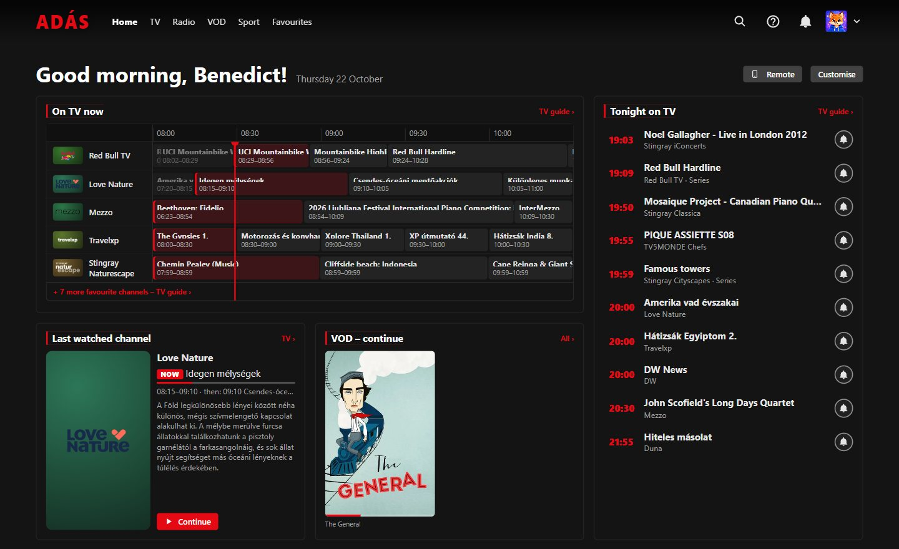
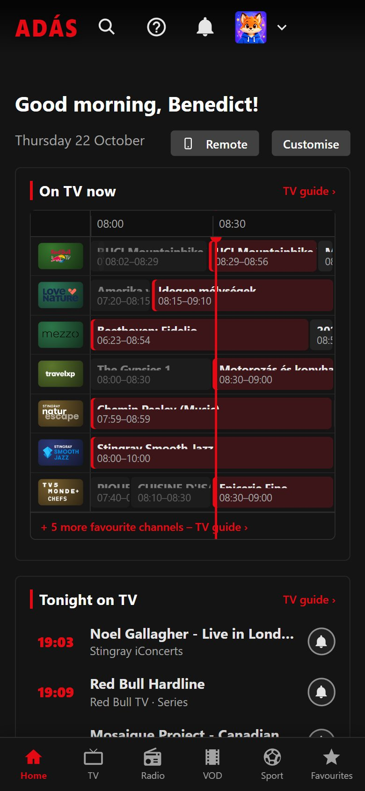
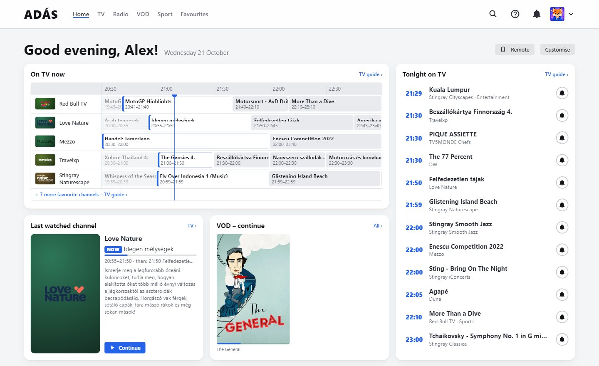
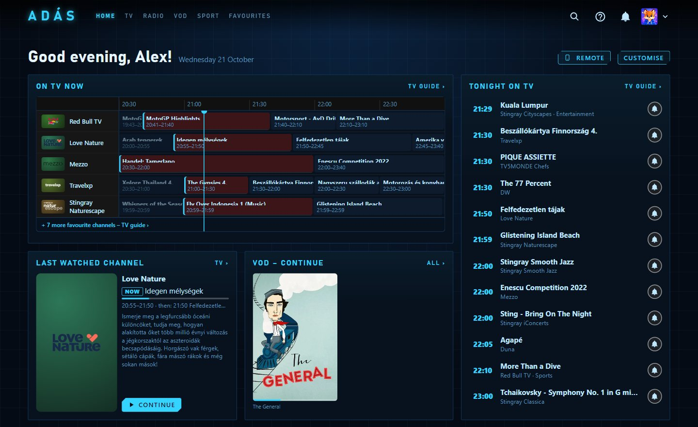
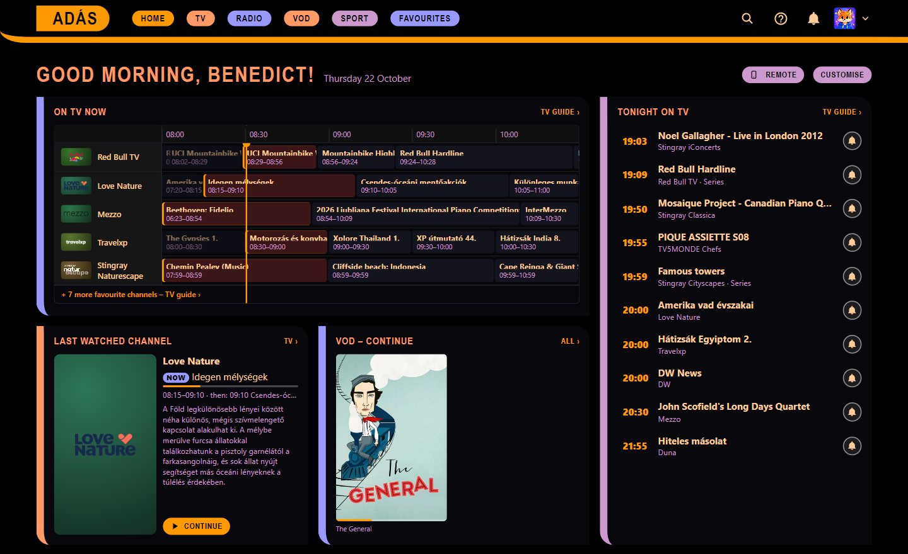
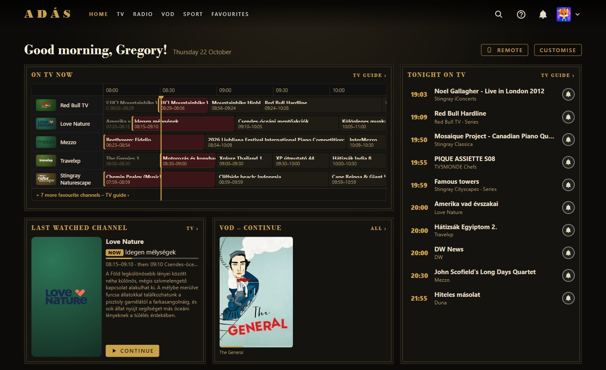
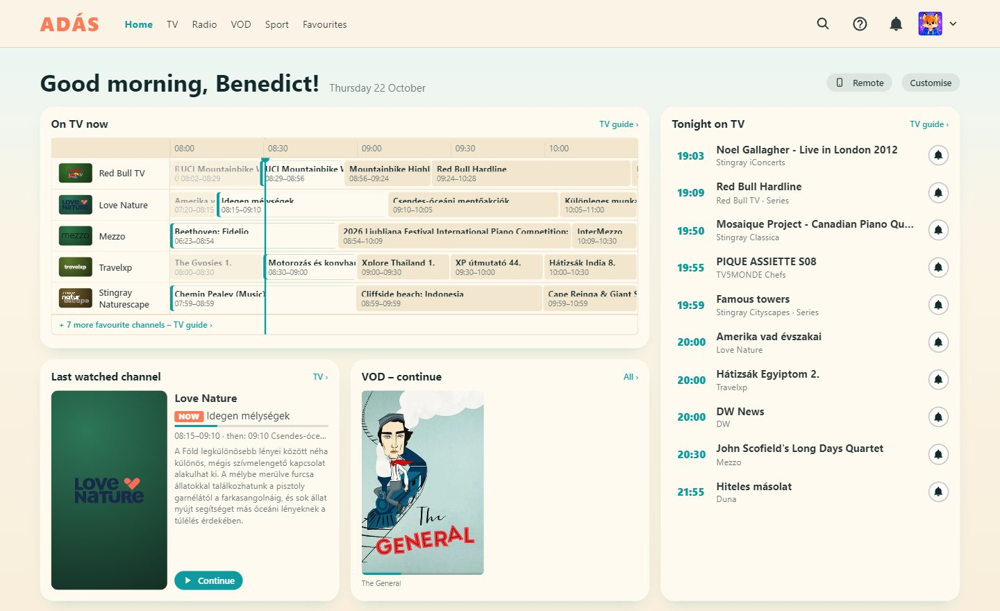
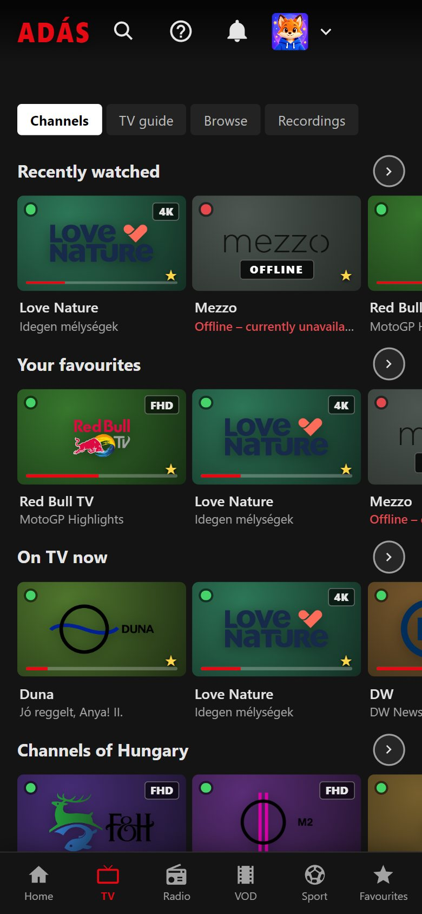
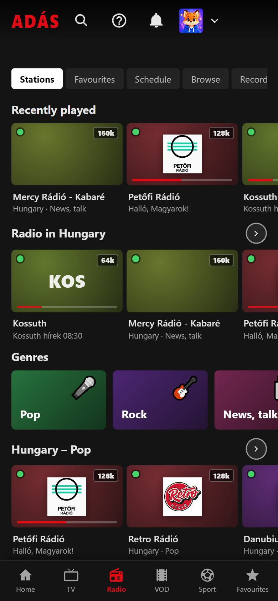

Live TV with a real guide
Thousands of public channels, sorted by country, with channel numbers, a timeline TV guide, reminders and a "next up" hint.
Adás is a free, open-source player for publicly available TV and radio streams. Thousands of channels with a TV guide, your own film and series library, and stations from all over the world – in one streaming-style interface, from your laptop to the living-room TV.
Latest version: ·


No account, no subscription, no ads. Install it, pick your profile, and it plays. Your phone can even be the remote.
Thousands of public channels, sorted by country, with channel numbers, a timeline TV guide, reminders and a "next up" hint.
Online VOD lists and your own NAS library, with covers, details, resume, next episode and automatic subtitles in English and Hungarian.
Tens of thousands of stations, "now playing" with covers, equaliser and sound effects, visualisations, sleep timer – and it keeps playing in the background.
Live scores, upcoming matches and tables for the leagues and teams you follow – and the channel that's showing it, one click away.
A profile for everyone, with their own favourites and look. Kids profiles show only kids content, with daily limits, age ratings and a parent PIN.
Record TV and radio now or on a schedule from the guide, pause live TV and jump back – then trim your recordings right in the app (desktop).
Send what you watch to a Chromecast or DLNA TV, use your phone as a remote with a QR code – in the colours of your theme, with podcast controls – and sync your setup between devices.
From cinema-dark to paper-white, retro to holographic – per profile, each with hand-picked colour variants and readable on every layout. Build your own theme in the editor and share it as a file.
Search, top charts, RSS and OPML; subscriptions per profile with new-episode alerts, a play queue, downloads (desktop and Android), speed, skip silence, volume boost, sleep timer and chapters.
Pick how the app is laid out – cinema, showcase, shelf, tiles, library, focus, desktop and more – each with its own home, menu and player style. Turn off what you don't use: it isn't loaded at all.
Real screenshots of the app – with publicly available channels and stations.
Each profile picks its own look and layout. Here are five of the 34 built-in themes – or design your own in the theme editor.





Plus high-contrast and large-text themes for easier reading.
The same app on Android phones and tablets, with a bottom menu and full-screen landscape playback – and a remote-friendly interface on Android TV and Google TV.


Free and open source. Version , released .
Windows 10 and 11. Updates itself from inside the app.
Open the .dmg and drag Adás into Applications. Adás isn't notarised by Apple, so the first launch needs one extra step: in Finder right-click → Open → Open; on macOS 15 and later launch it once, then System Settings → Privacy & Security → Open Anyway.
The AppImage updates itself from inside the app.
Android 6.0 or newer. Allow installing from your browser or file manager when asked.
Appears in the TV's launcher with a remote-friendly interface. Send it to the TV with an app like Send files to TV.
On a TV without Android, send what you watch from the desktop or Android app to a Chromecast or DLNA TV. (The LG webOS version is on hold and isn't part of the releases.)
Every file is listed with its SHA-256 checksum in SHA256SUMS.txt on the release page; the built-in updater checks it before installing.
Adás is a player, not a service. It has no servers of its own and nothing to sell.
No sign-up, no ads, and Adás sends no usage data to its developer. Your profiles, favourites, history and viewing statistics stay on your device. (The one exception: when you start a station from the Radio Browser database, Radio Browser receives the station’s ID – as its rules ask – to keep its popularity list accurate. Switching off the Radio Browser source (Settings → Radio) stops this too.)
The whole app is on GitHub under the MIT licence – read it, build it yourself, or help improve it.
Updates come from the official GitHub releases and are only installed if their SHA-256 checksum (and on Android, the signature) matches.
Casting, the phone remote and device sync run on your home network, protected by one-time keys and codes.
Kids profiles show kids content only, with daily viewing limits, age ratings from the guide and a parent PIN.
The app talks only to the sources you use – channel lists, guides, streams, radio and subtitle databases. The help lists them all.
Yes. Adás is free and open source (MIT licence), with no subscription, no ads and no in-app purchases.
By default from the public iptv-org list of freely available streams, and the TV guide from public XMLTV sources. You can add your own M3U playlists and guide sources too. Adás doesn't host or provide any content itself – it plays what the lists point to.
Public streams come and go, and some are only available in their own country. Adás quietly checks the streams, marks the broken or geo-blocked ones, and tries the next source when a channel has several.
Yes: install the TV APK on Android TV / Google TV. On other TVs you can cast from your computer or phone to a Chromecast or DLNA TV.
Yes – the app was made in Hungary and speaks Hungarian and English, with built-in help in both. This page in Hungarian.
Only on your device – on Windows in %APPDATA%\Adás, on macOS in ~/Library/Application Support/Adás, on Linux in ~/.config/Adás, on Android and TVs in the app's own storage. You can back everything up to a single file or move it to another device with a 12-digit code.
The desktop and Android versions check GitHub for new releases and can download and install them from inside the app after verifying the checksum. Your settings and profiles are kept.